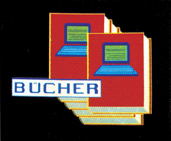
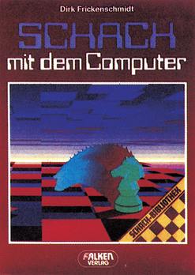
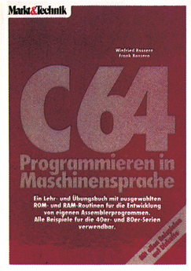
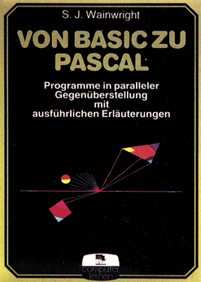

Bücher

Schach mit dem Computer
Beim ersten Durchblättern dieses 139 Seiten umfassenden Werkes stößt man zunächst kaum auf etwas Computerspezifisches. Wie in allen gängigen Schachbüchern findet man auch hier zahlreiche Spielabläufe und Diagramme mit Brettstellungen. Von diesem ersten Eindruck darf man sich jedoch keinesfalls leiten lassen, denn das Buch erfüllt sehr wohl, was der Titel verspricht. Grundkenntnisse im Spiel werden vorausgesetzt. Um es vorwegzunehmen: es handelt sich hierbei um kein C 64-spezifisches Werk. Vielmehr konzentriert sich der Autor exemplarisch auf fünf verbreitete, im Handel erhältliche Schachcomputer. Dennoch ist das Buch für jeden interessant, der gern gegen Computer Schach spielt. Wer noch keinen Computer mit dem entsprechenden Programm besitzt, dem werden gleich Entscheidungshilfen für den Kauf mit auf den Weg gegeben. Durch eine ausführliche und erfreulich detaillierte Beschreibung kann man sich zwar gut orientieren, aber es ist zu bemängeln, daß der Autor nur auf fünf Geräte eingeht. In einem bestechend witzigem und lockerem Stil zeigt der Autor zunächst ganz klar die Grenzen dieser »Künstlichen Schach-Intelligenz« auf. Das nächste Kapitel enthält wertvolle Tips im Umgang mit Schachcomputern. Um sich einen ersten Überblick über das Leistungsvermögen des eigenen Geräts zu verschaffen, bietet das Buch Aufgaben mit steigender Komplexität, auf die man seinen Computer »ansetzen« kann. Sehr anschaulich wird dem Leser nahegebracht, wie man mit Hilfe eines Schachcomputers Probleme lösen und Geheimnisse lüften kann. Ein besonderes Augenmerk dürfte wohl das Kapitel über Taktik wert sein. Mit einer Versuchsreihe von 30 Aufgaben und einem Bewertungsschema kann man die Taktik jedes Schachcomputers testen und mit den fünf bereitserwähnten Geräten vergleichen. Im nächsten Kapitel wird eine vorläufige Bilanz aller wichtigen Turniere zwischen Mensch und Computer und Computern gegeneinander gezogen. Bedeutende Schachspieler und deren Umgang mit Computern werden sehr interessant dargestellt. Es ist dem Autor hervorragend gelungen, den Leser in seinen Bann zu ziehen und ihn für den Wettkampf zwischen Mensch und Computer zu begeistern. Alle Aspekte dieses weitgefächerten Themengebietes werden sorgfältig reflektiert. Alles in allem handelt es sich bei diesem Buch um eine Investition, die man getrost allen Freunden des Schachspiels ans Herz legen kann.

Info: Dirk Frickenschmidt, »Schach mit dem Computer«, Falken-Verlag, 140 Seiten, ISBN 3-8086-0747-7, Preis 16,80 Mark
C64 — Programmieren in Maschinensprache
Zwei Autoren aus einer Familie, der Vater Realschullehrer, der Sohn Gymnasiast, da muß eigentlich ein verständliches Buch über einen nicht ganz einfachen Stoffherauskommen. Die Erwartungen werden nicht enttäuscht. Im Gegensatz zu vielen in die Programmierung in Assembler einführenden Büchern wird hier die Entwicklung kleiner Programme bemerkenswert einfach dargestellt. Bescheiden meinen die Autoren zwar, daß der Leser schon erste Schritte in der Programmierung in Assembler hinter sich haben sollte. Nötig ist das aber wirklich nicht. An zusätzlichem Wissen wird nur die Kenntnis über das Arbeiten mit einem Assembler zur Eingabe der vorgestellten Beispiele erwartet.

Unverständlich ist, daß nicht ein Assembler und das Arbeiten mitihmin dassonst sehr empfehlenswerte Buch aufgenommen worden ist.
Bewegte Bildschirmobjekte, Erweiterung der Interrupt-Routine, Arbeiten mit ganzen und mit reellen Zahlen, ROM-Routinen für Arithmetik, Bildschirmoperationen und Eingaben werden in den ausführlichen Beispielen ebenso behandelt wie das Verwalten von Variablen, die Bedienung der Peripherie und Maschinensprachemodule zur Aufnahme in eigene Basic-Programme. Bei allen Beispielen werden das Ziel und die Arbeitsweise des Programmes sehr verständlich dargestellt. Bei Bedarf werden neue ROM-Routinen ausführlich erklärt. Ausdrücklicher Wunsch der Autoren ist es, daß der Leser die Programme nach eigenen Bedürfnissen abändert oder erweitert. Die abgedruckten Assemblerbeispiele beziehen sich auf den C 64, Abweichungen für die 40er- und 80er-Serien werden gesondert angegeben. Eine ermüdende, systematische Behandlung aller Mnemonics bleibt dem Leser erspart. Befehle werden nur eingeführt, wenn sie zur Lösung eines Problems erforderlich sind. Etwas gewöhnungsbedürftig ist die dezimale Zahlendarstellung in allen Listings.
Sehr lobenswert ist die Tatsache, daß dem Buch die Diskette mit allen Beispielen beiliegt. Bei den unvermeidlichen Abtippfehlern hat man so die Gelegenheit, das fehlerfreie Programm zu untersuchen. Kritisch muß nur nochmals erwähnt werden, daß der unbedingt nötige Assembler fehlt.
(D. Hein/ev)Info: W. und F. Kassera, »C64 — Programmieren in Maschinensprache«, Markt & Technik Verlag, 327 Seiten, ISBN 3-89090-168-9, Preis 52 Mark einschließlich Programmadiskette
Dateiverwaltung — selbst gemacht
Dieses Buch läßt sich vorteilhaft für drei Zwecke einsetzen:
- Vermittlung von grundlegenden Basic-Programmiertechniken am Beispiel von Dateiverwaltungsprogrammen
- Vermittlung von Kenntnissen über sequentielle und Direktzugriffsdateien
- Programmierung eigener Dateiverwaltungsprogramme
Die Programme zur Zensurenverwaltung, Verkaufsstatistik, Literaturverzeichnis etc. dienen mehr dem Kennenlernen wichtiger Algorithmen und Programmiertechniken, für den praktischen Einsatz sind sie weniger geeignet. Index-Dateien werden kaum benutzt.
Die Programme sind auf einem IBM-System entwickelt worden und unter MS-DOS oder CP/M lauffähig. Commodore-Besitzer müßten einige Anpassungen vornehmen.
(D. Hein/ev)Info: Alan Simpson, »Dateiverwaltung — selbst gemacht«, Sybex-Verlag, 231 Seiten, ISBN 3-88745-085-X, Preis 38 Mark
Von Basic zu Pascal
Schon mancher Computerbesitzer hat den guten Vorsatz, Pascalzulernen, nicht in die Tat umgesetzt, weil diese Sprache angeblich zu schwer sei. Mit dem aus dem Englischen übersetzten Buch »Von Basic zu Pascal« wird der Beweis erbracht, daß das Umsteigen sehr leicht sein kann. Prinzipiell werden zwei gleiche Programme, von denen das eine in Basic, das andere in Pascal geschrieben wurde, abgedruckt und erklärt. Der Leser kann so ganz schnell die ihm neuen Befehle und die etwas ungewohnte Vorgehensweise kennenlernen. Einige Basic-Kenntnisse und den Besitz eines Pascal-Compilers vorausgesetzt, kann er nach kurzer Zeit den Kehrwert einer einzugebenden Zahl oder den Durchschnitt von mehreren Zahlen berechnen lassen. Er lernt, mit Feldern zu arbeiten und den Bubblesort-Sortieralgorithmus anzuwenden. Somerktder Leser, daß die Unterschiede doch nicht so groß sind, wie man allgemein annimmt. Bemerkenswerter Unterschied ist jedoch, daß man sein Pascal-Programm vorher planen muß. Vermutlich zeigt dieses Buch den leichtesten Weg, die Anfangsgründe von Pascal kennenzulernen.

Info: S.J. Wainwright, »Von Basic zu Pascal — Programme in paralleler Gegenüberstellung mit ausführlichen Erläuterungen —«, Moderne Verlagsgesellschaft, 75 Seiten, ISBN 3-478-09300-7, Preis 24,80 Mark